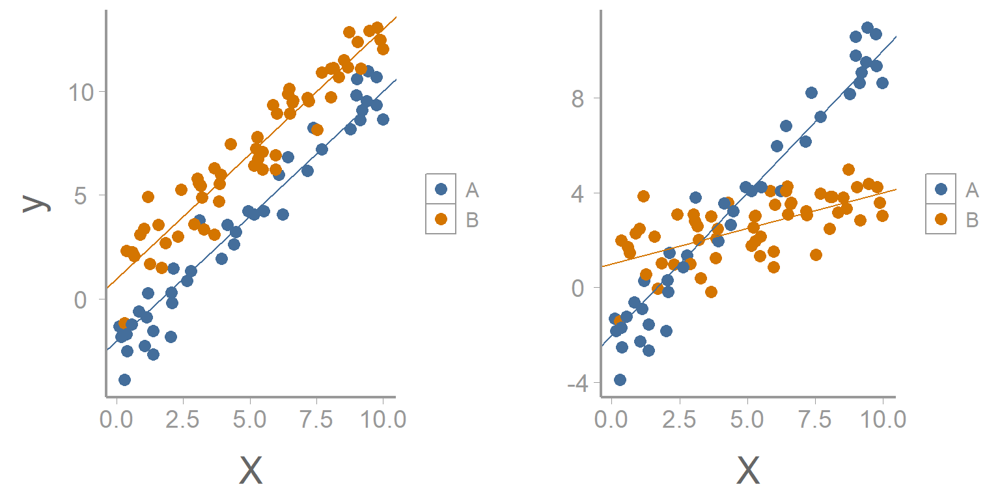
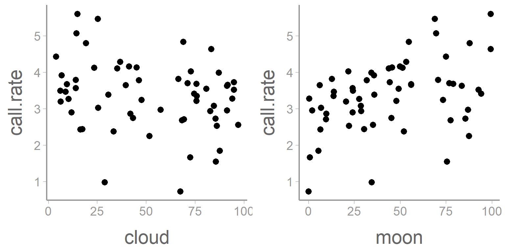
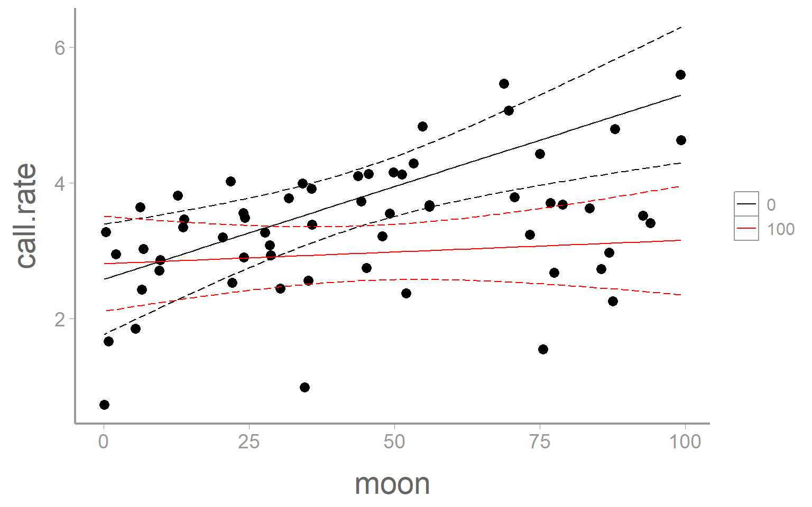
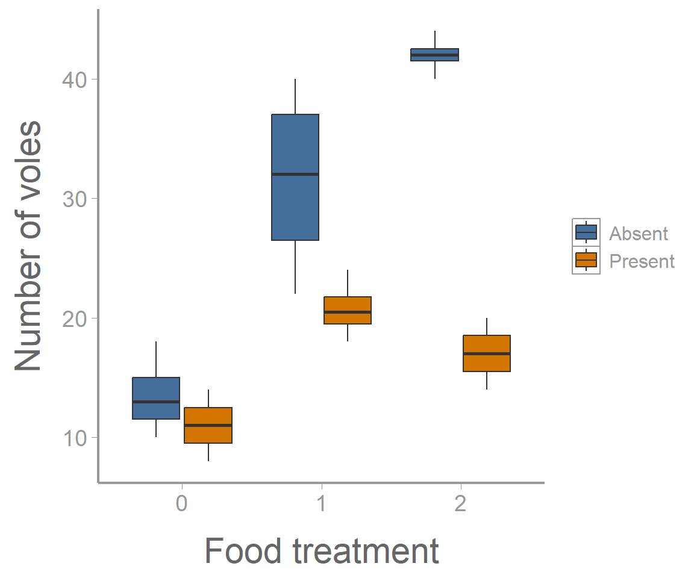
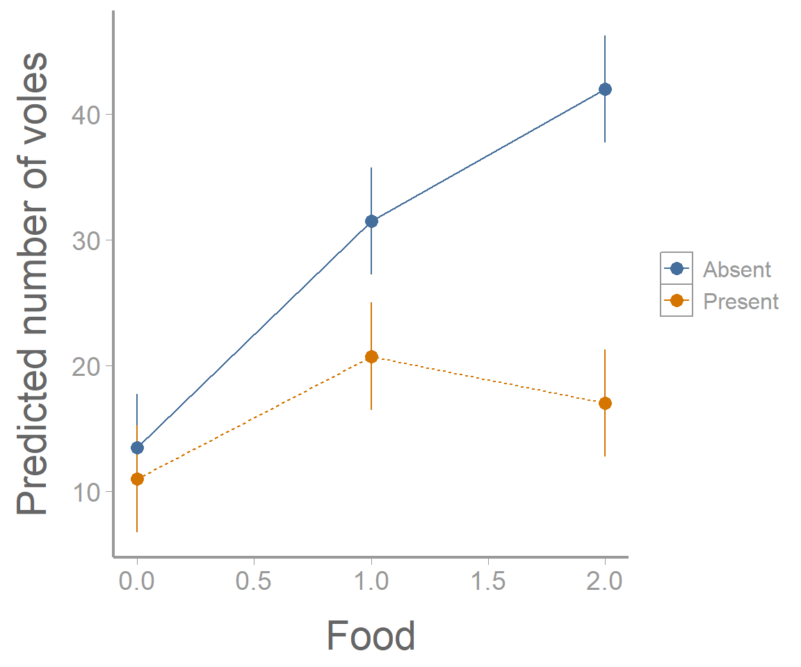

Lab 7: Interactions
FANR 6750: Experimental Methods in Forestry and Natural Resources Research
Fall 2026
Lab 6
Multiple Regression
ANCOVA
Blocking
Centering predictors
Today’s topics
Interactions
Definition
Identifying interactions visually
Types of interactions
Factorial Designs
2-way Factorial Designs using aov()
Post-hoc analyses
Visualizing a 2-way Factorial Design
2-way Factorial Designs using lm()
Interactions
Scenario
So far we have talked about models with one categorical predictor (ANOVA), models with one continuous predictor (simple linear regression), models with a categorical predictor while accounting for a continuous predictor (ANCOVA), and models with two categorical predictors where one is not of interest (Blocked design). Now we will discuss scenarios where there are multiple predictors and they are all of interest to the researcher. Additionally, and most importantly for this lab, the relationship between/among these predictors is also of interest. This relationship mentioned above is referred to as an interaction.
An interaction in model design terms refers to the phenomenon when the effect of one predictor variable depends on the values of one or more other predictor variables.
Visualizing an Interaction
As we saw in lecture, interactions can take many forms but the overall interpretation is the same. An interaction could be between two continuous variables, a continuous and categorical variable, or between two categorical variables. We will look at a few examples of these below.
Data Example 1
In this dataset, two continuous predictor variables (moon phase and percent cloud cover) are being used to predict the call rate of Chuck-will’s-widow. Although the researchers are interested in each of these variables alone, they are also interested in determining how the values of one predictor may alter the effects of the other.
Load the chuckdata dataset and examine the data
library(FANR6750)
data('chuckdata')
str(chuckdata)
#> 'data.frame': 60 obs. of 4 variables:
#> $ X : int 1 2 3 4 5 6 7 8 9 10 ...
#> $ call.rate: num 2.9 3.65 3.68 2.73 3.56 ...
#> $ cloud : num 0.1185 0.9156 0.0941 0.8536 0.14 ...
#> $ moon : num 0.241 0.56 0.56 0.855 0.24 ...
summary(chuckdata)
#> X call.rate cloud moon
#> Min. : 1.0 Min. :0.736 Min. :0.0394 Min. :0.00058
#> 1st Qu.:15.8 1st Qu.:2.840 1st Qu.:0.2242 1st Qu.:0.22001
#> Median :30.5 Median :3.441 Median :0.4965 Median :0.43986
#> Mean :30.5 Mean :3.361 Mean :0.5171 Mean :0.44644
#> 3rd Qu.:45.2 3rd Qu.:3.840 3rd Qu.:0.8123 3rd Qu.:0.71315
#> Max. :60.0 Max. :5.594 Max. :0.9697 Max. :0.99301Notice that several of the variables in the dataset are recorded as percentages. This fact will affect the way that we interpret the model output. As they are defined now, our interpretation of a slope means that call rate will change some amount for each unit change in cloud cover or moon phase. Currently, one unit of these variables represents the difference between 0% and 100%. It would be more intuitive for us to talk about changes in call rate for each percent change in the predictors. To do this, we can simply modify our dataset.
chuckdata$cloud <- chuckdata$cloud*100
chuckdata$moon <- chuckdata$moon*100Now a one unit change in these predictors represents a one percent change.
Next, it would be a good idea to plot the relationship between the response variable and each predictor.
# ```{r, fig.width=8, fig.height=4} R code chunk options for making this plot
# install.packages('gridExtra') Check your package library to see if you already have this package
library(gridExtra)
library(ggplot2)
grid.arrange(
ggplot(data= chuckdata, aes(x= cloud, y= call.rate)) +
geom_point(),
ggplot(data= chuckdata, aes(x= moon, y= call.rate)) +
geom_point(), ncol= 2)
Does there appear to be a relationship between call rate and either of these predictor variables?
Let’s use a linear model to look at the relationships. First, we need to define our linear model:
\[ y_i = \beta_0 + \beta_1x_{1i} + \beta_2x_{2i} + \beta_3x_{1i}x_{2i} + \epsilon_i \]
How would you interpret each of these terms? Which ones represent the main effects and which represents the interaction?
Now we are ready to specify our model in R1.
mod1 <- lm(call.rate~ moon*cloud, data= chuckdata)
summary(mod1)
#>
#> Call:
#> lm(formula = call.rate ~ moon * cloud, data = chuckdata)
#>
#> Residuals:
#> Min 1Q Median 3Q Max
#> -2.365 -0.392 0.158 0.560 1.497
#>
#> Coefficients:
#> Estimate Std. Error t value Pr(>|t|)
#> (Intercept) 2.582092 0.405007 6.38 3.7e-08 ***
#> moon 0.027339 0.008023 3.41 0.0012 **
#> cloud 0.002281 0.006423 0.36 0.7238
#> moon:cloud -0.000239 0.000123 -1.94 0.0573 .
#> ---
#> Signif. codes: 0 '***' 0.001 '**' 0.01 '*' 0.05 '.' 0.1 ' ' 1
#>
#> Residual standard error: 0.833 on 56 degrees of freedom
#> Multiple R-squared: 0.281, Adjusted R-squared: 0.243
#> F-statistic: 7.31 on 3 and 56 DF, p-value: 0.000322How would you interpret these parameter estimates? Were the main effects significant? Was the interaction significant? Given the results you see here, would it be appropriate for the researcher to consider the main effects independently of each other?
nd1 <- data.frame(moon = seq(min(chuckdata$moon), max(chuckdata$moon), length = 100),
cloud = rep(0,100))
nd2 <- data.frame(moon = seq(min(chuckdata$moon), max(chuckdata$moon), length = 100),
cloud = rep(100,100))
E1 <- predict(mod1, newdata = nd1, se.fit = TRUE, interval="confidence")
predictionData1 <- data.frame(E1$fit, nd1)
E2 <- predict(mod1, newdata = nd2, se.fit = TRUE, interval="confidence")
predictionData2 <- data.frame(E2$fit, nd2)
colors <- c('0' = 'black', '100' = 'red')ggplot() +
geom_point(data = chuckdata, aes(x = moon, y = call.rate)) +
geom_ribbon(data = predictionData1, aes(x = moon, ymin = lwr, ymax = upr),
color = "black", linetype = "longdash", fill = NA) +
geom_path(data = predictionData1, aes(x = moon, y = fit, color= '0')) +
geom_ribbon(data= predictionData2, aes(x = moon, ymin = lwr, ymax = upr),
color = 'red', linetype = 'longdash', fill = NA) +
geom_path(data = predictionData2, aes(x = moon, y = fit, color= '100')) +
scale_color_manual(values= colors) +
labs(color= 'Cloud cover')
Data example 2
Below is a dataset which contains information about a species of microtus vole. Voles are small rodents found throughout the world which generally feed on grasses, grains, and seeds. In this experiment, a population of voles has been introduced into 24 enclosures. Each enclosure is randomly assigned to two treatments- food (three levels) and predator presence (two levels). After a specified period of time the number of surviving voles in each enclosure is counted. The researcher is particularly interested in understanding how food availability affects the vole population while also taking into account the presence or absence of predators.
The dataset described above can best be approached through a particular kind of ANOVA which is referred to as a Factorial Design.
A factorial design is commonly used when:
- There are multiple categorical predictors
- The interactions between/among predictors is of interest
- There are replicates within each combination of treatment levels
Load the microtusdata dataset and examine the data:
library(FANR6750)
library(ggplot2)
data("microtusdata")
head(microtusdata)| voles | food | predators |
|---|---|---|
| 10 | 0 | Present |
| 12 | 0 | Present |
| 8 | 0 | Present |
| 14 | 0 | Present |
| 18 | 1 | Present |
| 20 | 1 | Present |
str(microtusdata)
#> 'data.frame': 24 obs. of 3 variables:
#> $ voles : int 10 12 8 14 18 20 21 24 20 18 ...
#> $ food : Factor w/ 3 levels "0","1","2": 1 1 1 1 2 2 2 2 3 3 ...
#> $ predators: chr "Present" "Present" "Present" "Present" ...Before proceeding, we need to convert food and predators to factors:
microtusdata$food <- factor(microtusdata$food)
microtusdata$predators <- factor(microtusdata$predators)
str(microtusdata)
#> 'data.frame': 24 obs. of 3 variables:
#> $ voles : int 10 12 8 14 18 20 21 24 20 18 ...
#> $ food : Factor w/ 3 levels "0","1","2": 1 1 1 1 2 2 2 2 3 3 ...
#> $ predators: Factor w/ 2 levels "Absent","Present": 2 2 2 2 2 2 2 2 2 2 ...How many replicates do we have?
table(microtusdata[,c("predators","food")])
#> food
#> predators 0 1 2
#> Absent 4 4 4
#> Present 4 4 4Visualizing the data
Visualizing multiple factors at once can sometimes be tricky. We’ll use the fill aestethic to make separate boxplots for each predation level, within each food treatment:
ggplot(microtusdata, aes(x = food, y = voles, fill = predators)) +
geom_boxplot() +
scale_x_discrete("Food treatment") +
scale_y_continuous("Number of voles")
It’s clear from this figure that 1) food supplementation influences vole abundance, and 2) the effects of food treatment depend on whether predators are present or absent.
Defining the model
Below is the equation we might use to define our linear model for a 2-way factorial design:
\[ y_{ijk} = \mu + \alpha_i + \beta_j + \alpha\beta_{ij} + \epsilon_{ijk} \ \ \ \ \ \text{where} \ \ \ \ \ \epsilon_i \sim \text{N}(0,\sigma) \]
Notice the increased complexity of the subscripting. What does each represent? What does the \(\alpha\beta_{ij}\) term represent?
Can you list all of the relevant null and alternative hypotheses?
Factorial design using aov()
We can analyze the microtus data using the aov() function that we’re already familiar with.
aov1 <- aov(voles ~ food * predators, data = microtusdata)
summary(aov1)
#> Df Sum Sq Mean Sq F value Pr(>F)
#> food 2 1337 669 40.6 2.1e-07 ***
#> predators 1 975 975 59.2 4.3e-07 ***
#> food:predators 2 518 259 15.7 0.00011 ***
#> Residuals 18 297 16
#> ---
#> Signif. codes: 0 '***' 0.001 '**' 0.01 '*' 0.05 '.' 0.1 ' ' 1On your own, fit the model without the interaction (food + predators). How do the results compare?
Follow ups
Often in your own analysis, you will not stop at a significant ANOVA result. For example, maybe you want to further explore the effects of one factor while holding the other factor constant. In this case, we can further test whether food supplements influence vole abundance when predators are present using the subset argument:
summary(aov(voles ~ food,
data = microtusdata,
subset = predators == "Present"))
#> Df Sum Sq Mean Sq F value Pr(>F)
#> food 2 193.5 96.8 14.8 0.0014 **
#> Residuals 9 58.8 6.5
#> ---
#> Signif. codes: 0 '***' 0.001 '**' 0.01 '*' 0.05 '.' 0.1 ' ' 1Or when predators are absent:
summary(aov(voles ~ food,
data = microtusdata,
subset = predators == "Absent"))
#> Df Sum Sq Mean Sq F value Pr(>F)
#> food 2 1662 831 31.4 8.7e-05 ***
#> Residuals 9 238 26
#> ---
#> Signif. codes: 0 '***' 0.001 '**' 0.01 '*' 0.05 '.' 0.1 ' ' 1Or maybe we want to test which levels are different using our old friend the Tukey HSD test, which for the factorial design will return both the “main” effect differences and the interaction2:
TukeyHSD(aov1)
#> Tukey multiple comparisons of means
#> 95% family-wise confidence level
#>
#> Fit: aov(formula = voles ~ food * predators, data = microtusdata)
#>
#> $food
#> diff lwr upr p adj
#> 1-0 13.875 8.694 19.056 0.0000
#> 2-0 17.250 12.069 22.431 0.0000
#> 2-1 3.375 -1.806 8.556 0.2464
#>
#> $predators
#> diff lwr upr p adj
#> Present-Absent -12.75 -16.23 -9.267 0
#>
#> $`food:predators`
#> diff lwr upr p adj
#> 1:Absent-0:Absent 18.00 8.8756 27.124 0.0001
#> 2:Absent-0:Absent 28.50 19.3756 37.624 0.0000
#> 0:Present-0:Absent -2.50 -11.6244 6.624 0.9488
#> 1:Present-0:Absent 7.25 -1.8744 16.374 0.1684
#> 2:Present-0:Absent 3.50 -5.6244 12.624 0.8221
#> 2:Absent-1:Absent 10.50 1.3756 19.624 0.0189
#> 0:Present-1:Absent -20.50 -29.6244 -11.376 0.0000
#> 1:Present-1:Absent -10.75 -19.8744 -1.626 0.0158
#> 2:Present-1:Absent -14.50 -23.6244 -5.376 0.0010
#> 0:Present-2:Absent -31.00 -40.1244 -21.876 0.0000
#> 1:Present-2:Absent -21.25 -30.3744 -12.126 0.0000
#> 2:Present-2:Absent -25.00 -34.1244 -15.876 0.0000
#> 1:Present-0:Present 9.75 0.6256 18.874 0.0323
#> 2:Present-0:Present 6.00 -3.1244 15.124 0.3351
#> 2:Present-1:Present -3.75 -12.8744 5.374 0.7781Visualizing the results
Another follow up that will often be important is visualizing the results of the ANOVA model. In the case of the factorial design, this will generally involve making a graph of the predicted response (and associated uncertainty!) for each combination of factors.
To create the data that will form the basis of this visualization, we’ll first use the model.tables() function to compute the relevant means (i.e., predicted values) and standard errors:
(tab <- model.tables(aov1, type="means", se = TRUE))
#> Tables of means
#> Grand mean
#>
#> 22.62
#>
#> food
#> food
#> 0 1 2
#> 12.25 26.12 29.50
#>
#> predators
#> predators
#> Absent Present
#> 29.00 16.25
#>
#> food:predators
#> predators
#> food Absent Present
#> 0 13.50 11.00
#> 1 31.50 20.75
#> 2 42.00 17.00
#>
#> Standard errors for differences of means
#> food predators food:predators
#> 2.030 1.658 2.871
#> replic. 8 12 4Next, we’ll extract the group means
(ybar_ij. <- tab$tables$"food:predators")
#> predators
#> food Absent Present
#> 0 13.50 11.00
#> 1 31.50 20.75
#> 2 42.00 17.00What about confidence intervals? Notice that model.tables() returns “Standard errors for differences of means”.
Extending the formulas to the \(A \times B\) factorial case, the confidence interval for the difference in two \(A \times B\) means is:
\[\Large CI_{1−\alpha} : \bar{y}_{ij.} − \bar{y}_{ij.′} \pm t_{1−\alpha/2,ab(n−1)}\times \sqrt{\frac{2MSE}{n}}\]
where \(n = 4\) in the vole example.
To set up a plot of the group means, however, we need a confidence interval for each mean. We take out the ‘2’ from the SE expression:
\[\Large CI_{1−\alpha} : \bar{y}_{ij.} \pm t_{1−\alpha/2,ab(n−1)}\times \sqrt{\frac{MSE}{n}}\]
Where can we find MSE?
Answer: in the output of summary() of our aov1 object:
summary(aov1)
#> Df Sum Sq Mean Sq F value Pr(>F)
#> food 2 1337 669 40.6 2.1e-07 ***
#> predators 1 975 975 59.2 4.3e-07 ***
#> food:predators 2 518 259 15.7 0.00011 ***
#> Residuals 18 297 16
#> ---
#> Signif. codes: 0 '***' 0.001 '**' 0.01 '*' 0.05 '.' 0.1 ' ' 1Calculate the width of the confidence intervals:
MSE <- summary(aov1)[[1]]$`Mean Sq`[4] ## 16.5
ybar_ij.SE <- sqrt(MSE/4)
CI.half <- qt(0.975, 18) * ybar_ij.SE
(CI <- c(-CI.half, CI.half))
#> [1] -4.265 4.265Now we can create a data frame and plot the group means and confidence intervals. Remember to always check how you have defined the order of your dataframe and make sure that it matches with the order that the group means have been displayed in the model.tables() function.
predicted.voles <- data.frame(Food = rep(c(0, 1, 2), 2),
Predators = rep(c("Absent", "Present"), each = 3),
voles = c(ybar_ij.))
## Add lower and upper confidence intervals
predicted.voles <- dplyr::mutate(predicted.voles,
LCI = voles + CI[1],
UCI = voles + CI[2])ggplot(predicted.voles, aes(x = Food, y = voles,
color = Predators)) +
geom_path(aes(linetype = Predators)) +
geom_errorbar(aes(ymin = LCI, ymax = UCI), width = 0) +
geom_point() +
scale_y_continuous("Predicted number of voles")
Factorial Design using lm()
Although we have already completed the analysis, lets also look at how we could have built this model using the lm() function.
lm1 <- lm(voles~ food*predators, data= microtusdata)
summary(lm1)
#>
#> Call:
#> lm(formula = voles ~ food * predators, data = microtusdata)
#>
#> Residuals:
#> Min 1Q Median 3Q Max
#> -9.50 -2.19 0.00 2.25 8.50
#>
#> Coefficients:
#> Estimate Std. Error t value Pr(>|t|)
#> (Intercept) 13.50 2.03 6.65 3.1e-06 ***
#> food1 18.00 2.87 6.27 6.5e-06 ***
#> food2 28.50 2.87 9.93 1.0e-08 ***
#> predatorsPresent -2.50 2.87 -0.87 0.395
#> food1:predatorsPresent -8.25 4.06 -2.03 0.057 .
#> food2:predatorsPresent -22.50 4.06 -5.54 2.9e-05 ***
#> ---
#> Signif. codes: 0 '***' 0.001 '**' 0.01 '*' 0.05 '.' 0.1 ' ' 1
#>
#> Residual standard error: 4.06 on 18 degrees of freedom
#> Multiple R-squared: 0.905, Adjusted R-squared: 0.879
#> F-statistic: 34.3 on 5 and 18 DF, p-value: 1.34e-08There is a lot going on here. Can you interpret each of the parameter estimates (especially the interaction term)? What do we conclude about the original set of hypotheses related to our model?
Assignment
In the field of fisheries, hard calcified structures such as otoliths and fin spines are frequently used to age individual animals. Similar to trees, these structures lay down annual growth rings which can be counted to estimate age. The use of spines instead of the more traditional aging structure in fish, otoliths, has the advantage that it usually does not require killing the fish. Otoliths, however, typically produce higher quality images since they are less susceptible to being damaged during the life of the fish.
A graduate student at UGA is conducting studies on Lake Sturgeon (Acipenser fulvescens), a large river dwelling fish which in Georgia is only found in the northwestern corner of the state. The student plans to use the calcified structures from these fish to better understand the population age-distribution. Before examining growth annuli, however, the student needs to cut the structures and mount them on microscope slides.
In the dataset below, the student has processed 36 structures (some spines and some otoliths) using 3 different mounting methods (A, B, and C) and 3 different saw speeds (low, medium, and high). Once mounted, the time required (seconds) to accurately age each structure was recorded for each fish.
data("agingdata")
head(agingdata)Questions/tasks
Write out an equation for the linear model that would describe this scenario. Define each term
Analyze this dataset using an \(A \times B \times C\) factorial ANOVA implemented with
aov(). Because the student is not interested in the 3-way interaction, set up your model so that it does not include that term (only include the main effects and 2-way interactions of all variables)Interpret the model output. Which main effects and which interactions were significant?
Does the effect of the mounting method depend on the speed of the saw? If so, how?
Which combination of mounting method, saw speed, and structure type resulted in the lowest average aging time?
The student has decided that he is going to use fin spines in future studies because he does not want to use the lethal method of collecting otoliths. Given that, which combination of mounting method and saw speed would result in the lowest average aging time?
Put your answers in an R Markdown report. Your report should include:
+ A well-formatted ANOVA table (with header); and
+ A publication-quality plot of the estimated effect of mounting method on aging time for both types of hard structures, including 95% confidence intervals. Rather than making 3 plots (one for each saw speed), use the predictions for 'high speed' only. The figure should also have a descriptive caption and any aesthetics (color, line type, etc.) should be clearly defined. - At the end of your report, under a header titled “Reflection”, answer the following questions:
On a 1-10 scale, how would you rate your confidence in the topics covered in this lab?
What lingering questions/confusion about these topics do you still have?
A few things to remember when creating the document:
Be sure to include your name in the
authorfield of the headerBe sure the output type is set to:
output: html_documentBe sure to set
echo = TRUEin allRchunks so that all code and output is visible in the knitted documentRegularly knit the document as you work to check for errors
See the R Markdown reference sheet for help with creating
Rchunks, equations, tables, etc.If you use AI on any part of your assignment, you must include the full prompt(s) you used and it’s full answer(s) in a separate section titled “AI assistance” at the end of this document.
Footnotes
There are two ways to denote interactions in the model statement. The more broad method is shown above using an asterisk between the two predictors. This tells
Rto include all of the main effects of these predictors as well as the interactions. In the case of a 3-way Factorial Design we could have something like A*B*C which would be interpreted as main effect of A, main effect of B, main effect of C, interaction between A and B, interaction between A and C, interaction between B and C, and interaction among A,B, and C. While the notation above saves time and space, we are not always actually interested in all of the possible interactions available to be estimated. Instead, we may want to include several main effects but only investigate a subset of interaction. For example, in a 3-way design if we were only interested in the interactions between A and B, we could writeresponse~ A + B + C + A:B. This would tellRto only include that specific interaction term.↩︎Depending on the number of factors and levels, we may not want to view all of the pairwise comparisons at once. Adding the
which=argument to theTukeyHSDfunction tellsRwhich factors we are interested in having displayed.↩︎